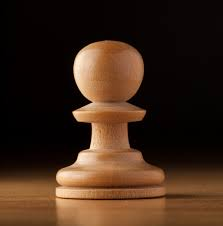
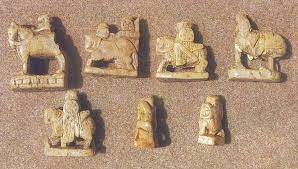
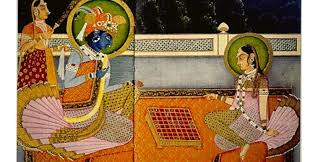
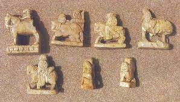
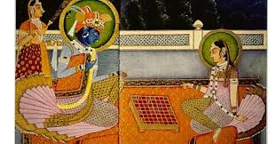

--)) why you should choss this web??
our this site almost reach india's no.1 chess information site!!here you can get anything or everything.......

looking for new rules about chess
The history of chess goes back almost 1500 years. The game originated in northern India in the 6th century AD and spread to Persia. When the Arabs conquered Persia, chess was taken up by the Muslim world and subsequently, through the Moorish conquest of Spain, spread to Southern Europe.[1][2] But in early Russia, the game came directly from the Khanates (muslim territories) to the south.[3] In Europe, the moves of the pieces changed in the 15th century. The modern game starts with these changes. In the second half of the 19th century, modern tournament play began. Chess clocks were first used in 1883, and the first world chess championship was held in 1886. The 20th century saw advances in chess theory, and the establishment of the World Chess Federation (FIDE).[4] Chess engines (programs that play chess), and chess data bases became important
 



Chess is a recreational and competitive board game played between two players. It is sometimes called Western or international chess to distinguish it from related games such as xiangqi. The current form of the game emerged in Southern Europe during the second half of the 15th century after evolving from similar, much older games of Indian and Persian origin. Today, chess is one of the world's most popular games, played by millions of people worldwide at home, in clubs, online, by correspondence, and in tournaments. Chess is an abstract strategy game and involves no hidden information. It is played on a square chessboard with 64 squares arranged in an eight-by-eight grid. At the start, each player (one controlling the white pieces, the other controlling the black pieces) controls sixteen pieces: one king, one queen, two rooks, two knights, two bishops, and eight pawns. The object of the game is to checkmate the opponent's king, whereby the king is under immediate attack (in "check") and there is no way for it to escape. There are also several ways a game can end in a draw. Organized chess arose in the 19th century. Chess competition today is governed internationally by FIDE (International Chess Federation). The first universally recognized World Chess Champion, Wilhelm Steinitz, claimed his title in 1886; Magnus Carlsen is the current World Champion. A huge body of chess theory has developed since the game's inception. Aspects of art are found in chess composition; and chess in its turn influenced Western culture and art and has connections with other fields such as mathematics, computer science, and psychology. One of the goals of early computer scientists was to create a chess-playing machine. In 1997, Deep Blue became the first computer to beat the reigning World Champion in a match when it defeated Garry Kasparov. Today's chess engines are significantly stronger than even the best human players, and have deeply influenced the development of chess theory.
Players: 2
Playing time: Casual games usually last 10 to 60 minutes;
tournament games: last anywhere from about 10 minutes
(fast chess) to 6 hours or more.
Random chance: None
Skill(s) required: Strategy, tactics
| Players | Playing Time | Games | Random Chance | Skills Required |
| 2 | 10 to 60 minutes | chess | none | king |